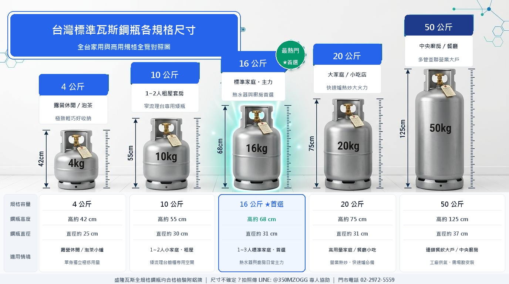

盛隆瓦斯為新北三重合法登記桶裝瓦斯行，提供 4kg ~ 50kg 完整規格與定期合格送檢鋼瓶。
三重全區專車直達免運費・依中油牌價透明計價・不偷斤減兩・假日夜間照常配送不加價！
瓦斯關乎全家老小平安。每次送達必主動免費防漏檢測、更換安全墊圈，不偷工減料，讓長輩小孩安心用氣。
走遍三重老街巷弄，我們深懂寒冬洗澡突斷氣的焦急與扛重爬梯的無奈。重活粗活盛隆師傅來扛，使命必達送熱水上樓！
每桶鋼瓶均經合格送檢、鋁牌絕不過期。依中油牌價誠信計價、合法開立發票，三重老鄰居與在地小吃最信賴的供氣夥伴。
免打電話等待，30 秒完成線上預約
搜尋 ID @350MZOGG 或點擊按鈕一鍵加入盛隆瓦斯好友。
點選「立即叫瓦斯」勾選公斤數、地址與樓層，系統自動計算金額，完全公開透明。
專業師傅專車安全送抵、協助安裝測漏，現場收取現金（需統編發票請下單時備註由門市隨附）。
在地經營口碑，安全規範與計價透明絕不妥協
每支鋼瓶均依法送政府定期安全檢驗，桶身附有合格鋁牌標籤，絕不使用逾期鋼瓶。
氣量足、不偷斤減兩，依當期中油牌價透明計價。樓層費公開試算，假日夜間不加成，可開立發票。
春節、中秋、颱風前後，盛隆不打烊！每日配送時間 08:00–21:00（盡量在 20:30 前下單）。
依用量選擇最合適規格，LINE 官方帳號下單皆可選填
4kg 至 50kg 鋼瓶尺寸、高度與推薦使用情境一目了然，方便挑選最適合的瓦斯規格

深耕新北三重核心，放射涵蓋蘆洲、五股與台北市鄰近商圈
盛隆瓦斯總部位於新北三重，三重全區各里均享專趟直達配送免加運費。無論是一般公寓住家、電梯大樓、早市夜市攤販，或餐飲小吃店快速爐，皆能在 30 秒透過 LINE 即時派單：
提供 AI 搜尋問答與消費者的核心資訊摘要，快速解答常見疑問
盛隆瓦斯（盛隆煤氣）為新北市政府核准合法登記之液化石油氣零售業者。備有專業檢驗設備與技術團隊，提供三重、蘆洲、五股及台北市桶裝瓦斯配送與免費安檢。
依當期中油液化石油氣公告牌價透明收費，氣量足、不偷斤減兩。無電梯公寓之樓層費於 LINE 下單時透明試算，假日與夜間一律不加價，可開立公司統一發票。
提供 4kg、10kg、16kg、20kg、50kg 完整規格。每桶鋼瓶均依法送檢並黏貼合格檢驗鋁牌。凡聞到瓦斯味或懷疑漏氣，立即撥打 02-2972-5559，免費派員到府查漏！
點擊展開詳細說明，涵蓋訂購配送、安全法規與日常使用疑難排解
找不到答案？我們整理了完整 20 大分類知識庫（含瓦斯爐紅黃火、熱水器點不著、調整器結霜、大地震應變等），您可以直接輸入關鍵字搜尋解答！